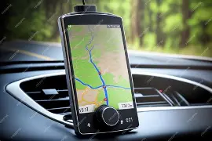

What Does an Uber Driver Do?
An Uber driver transports passengers to their requested destinations using the Uber platform. The driver receives trip requests through the Uber Driver application, collects passengers and follows directions to their destinations.
Technology Used in This Career

Technology is essential because Uber uses a digital platform to connect drivers and passengers.
- Smartphone: Used to access the Uber Driver app.
- Internet connection: Allows the app to receive trip requests and updates.
- GPS: Helps identify locations and provide directions.
- Navigation software: Helps drivers follow routes to destinations.
- Mobile data: Allows the driver to remain connected while working.
How Technology Connects a Driver and Passenger
SMARTPHONE → UBER APP → GPS NAVIGATION → PASSENGER
Digital technology helps organise trips and communication between drivers and passengers.
Important Skills
An Uber driver needs several personal and digital skills:
- Basic computer and smartphone skills.
- Knowledge of GPS and digital maps.
- Good communication and customer service.
- Time management and punctuality.
- Problem-solving skills.
- Safe and responsible driving.
- Basic financial management to monitor expenses and income.
Requirements in South Africa
To drive passengers for payment, a person needs a valid South African Professional Driving Permit (PrDP), as well as the documents and safety screening required by Uber.
- A valid driving licence.
- A valid Professional Driving Permit (PrDP).
- Completed safety screening results.
- A driver profile photograph.
- Access to a vehicle that meets Uber's requirements.
- An approved vehicle inspection report.
South African government information states that a person must be at least 21 years old to hold a PrDP for a passenger vehicle.
How Does the Registration Process Work?
According to Uber South Africa, the general process involves the following steps:
Step 1: Sign Up Online
Create an account on the official Uber website using an email address and cellphone number.
Step 2: Safety Screening
Complete the required safety screening through an approved screening provider.
Step 3: Upload Documents
Submit the required driver documents and screening results through the platform.
Step 4: Get an Eligible Vehicle
Make sure the vehicle meets the requirements for the selected Uber service and completes the required inspection.
Step 5: Activate the Account
Once the requirements have been completed and approved, the account can be activated.
Frequently Asked Questions
Does an Uber driver need to own a car?
Not necessarily. Uber provides information about vehicle solutions and partners for people who do not have their own eligible vehicle. However, the vehicle used must meet the requirements.
Why is GPS important?
GPS helps drivers identify their current location, locate passengers and navigate to destinations.
Is Uber driving a flexible career?
Uber allows drivers to choose when they want to drive, which can offer flexibility. However, earnings and expenses may vary.
Conclusion
Uber driving demonstrates how technology can create new employment opportunities in the gig economy. Smartphones, internet access, GPS and digital skills allow drivers to connect with passengers and provide transport services. Although the career offers flexibility, it also requires responsibility, preparation and careful management of expenses.